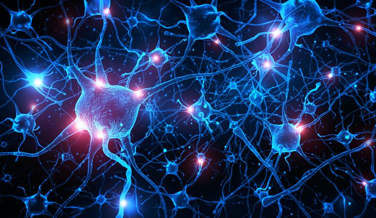

LA CÉLULA
La neurona, o célula nerviosa, es la unidad fundamental del sistema nervioso de los animales. Es una célula altamente especializada, que se encuentra no solo en el cerebro y el sistema digestivo, sino también en la médula espinal y en los nervios periféricos de todo el cuerpo.

SUS FUNCIONES
Su función principal es la comunicación. Las neuronas son responsables de recibir, procesar, transmitir y almacenar información a través de señales eléctricas y químicas, conocidas como impulsos nerviosos. Esta red de comunicación constituye la base de todas las funciones nerviosas, incluyendo pensamiento, memoria, movimiento, sensaciones y la regulación de procesos automáticos como la digestión.
ESTRUCTURA


Nuestro Grupo
- Humberto de Jesus Santos
- Henrique Yuji Aragaki
- Artur Tognetti Fraça